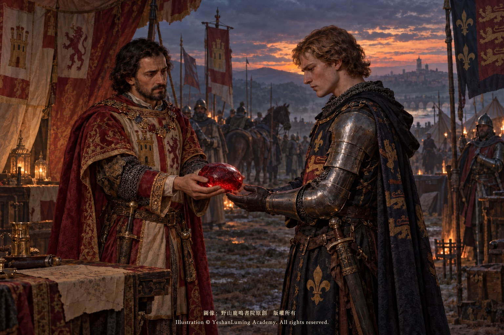
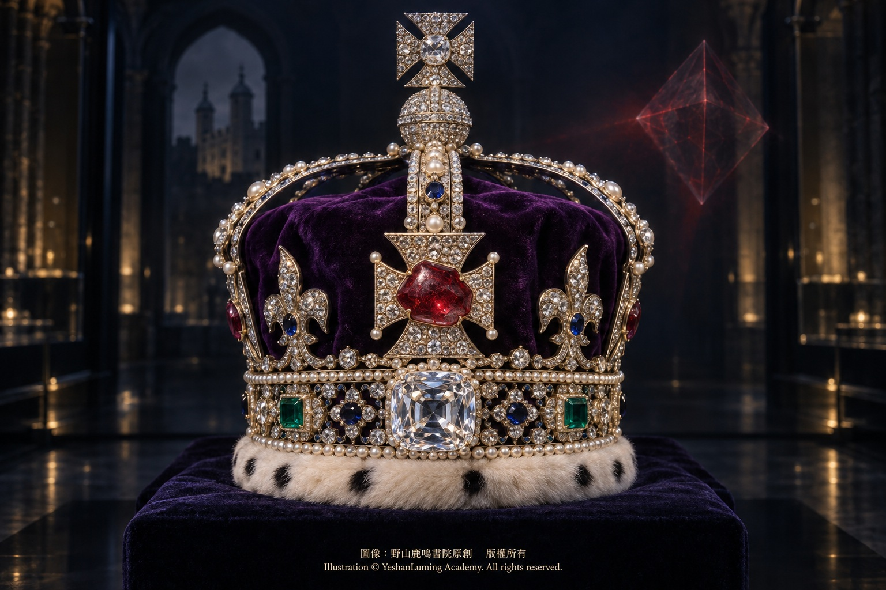

黑王子紅寶石：大英帝國王冠上的紅色歷史The Black Prince’s Ruby: A Scarlet History in Britain’s Imperial State Crown
The World of Gemstones · Ruby Series
The World of Gemstones · Ruby SeriesThe Black Prince’s Ruby: A Scarlet History in Britain’s Imperial State Crown
The World of Gemstones · Ruby Series
The World of Gemstones · Ruby Series黑王子紅寶石：大英帝國王冠上的紅色歷史
寶石世界·紅寶石篇
寶石世界·紅寶石篇
寶石世界·紅寶石篇（118）The World of Gemstones · Ruby Series (118)
在彩色寶石數千年的流傳史中，大自然有時會以極其相似的外表，向人類的認知開一個延續千年的玩笑。
在現代礦物學與精密光學儀器誕生以前，人們辨別寶石，主要依靠肉眼觀察顏色、光澤、透明度與硬度。於是，一種可能與紅寶石產於相同或相近大理岩型礦床、同樣能夠呈現鮮豔紅色與紅色螢光的寶石，在漫長歲月中始終身披「紅寶石」的聖袍，成為各國皇室爭相收藏的權力和財富象徵。
這種寶石，就是尖晶石。
若要選出歷史上名氣最大、傳奇最為曲折的「偽紅寶石」，鑲嵌在英國帝國王冠（Imperial State Crown）正面十字架中心的「黑王子紅寶石」（Black Prince’s Ruby），無疑是最具代表性的一顆。
它位於帝國王冠正面、庫里南二號鑽石上方，估計約重170克拉，長度約四至五公分。這顆寶石沒有被切磨成現代常見的刻面形態，而是保留著不規則的古老拋光卵石外觀。當君主在加冕典禮結束時戴上這頂帝國王冠，或親自出席國會開幕等重大國家儀式時，它便隨著王冠離開倫敦塔，在世人面前重新閃耀。
然而，這顆被稱為「紅寶石」的皇家巨石，真正的礦物學身份卻是紅色尖晶石。
它見證了英國王權的中斷與延續，也承載著中世紀戰爭、王朝更替，以及現代科學最終為其正名的歷程。但在走進它最著名的故事以前，筆者認為必須首先劃出一道重要界線：關於這顆被世人追捧的黑王子紅寶石，哪些屬於世代流傳的皇家傳說，哪些又是現存史料能夠證明的確切史實。
在流傳最廣的故事版本中，這顆巨大的紅色寶石，可以追溯到十四世紀中葉的西班牙安達魯西亞。當時，格拉那達的統治者穆罕默德六世（Muhammad VI of Granada），因紅髮而被西班牙人稱為「紅王」（El Rey Bermejo）。
一三六二年，穆罕默德六世在格拉那達失勢後逃往塞維亞，向卡斯提爾國王佩德羅一世（Pedro I of Castile）尋求庇護。然而，佩德羅卻將他拘捕並殺死。根據同時代史家的記載，穆罕默德六世被捕後遭到搜身，人們從他身上發現了三顆極為貴重、體積約如鴿蛋的大型巴拉斯紅寶石——也就是今天所說的紅色尖晶石。
這段記載表明，佩德羅確實從穆罕默德六世手中取得過大型紅色尖晶石；但現存文獻並不能證明，其中任何一顆就是今天鑲嵌在帝國王冠上的黑王子紅寶石。
在彩色寶石數千年的流傳史中，大自然有時會以極其相似的外表，向人類的認知開一個延續千年的玩笑。
在現代礦物學與精密光學儀器誕生以前，人們辨別寶石，主要依靠肉眼觀察顏色、光澤、透明度與硬度。於是，一種可能與紅寶石產於相同或相近大理岩型礦床、同樣能夠呈現鮮豔紅色與紅色螢光的寶石，在漫長歲月中始終身披「紅寶石」的聖袍，成為各國皇室爭相收藏的權力和財富象徵。
這種寶石，就是尖晶石。
若要選出歷史上名氣最大、傳奇最為曲折的「偽紅寶石」，鑲嵌在英國帝國王冠（Imperial State Crown）正面十字架中心的「黑王子紅寶石」（Black Prince’s Ruby），無疑是最具代表性的一顆。
它位於帝國王冠正面、庫里南二號鑽石上方，估計約重170克拉，長度約四至五公分。這顆寶石沒有被切磨成現代常見的刻面形態，而是保留著不規則的古老拋光卵石外觀。當君主在加冕典禮結束時戴上這頂帝國王冠，或親自出席國會開幕等重大國家儀式時，它便隨著王冠離開倫敦塔，在世人面前重新閃耀。
然而，這顆被稱為「紅寶石」的皇家巨石，真正的礦物學身份卻是紅色尖晶石。
它見證了英國王權的中斷與延續，也承載著中世紀戰爭、王朝更替，以及現代科學最終為其正名的歷程。但在走進它最著名的故事以前，筆者認為必須首先劃出一道重要界線：關於這顆被世人追捧的黑王子紅寶石，哪些屬於世代流傳的皇家傳說，哪些又是現存史料能夠證明的確切史實。
在流傳最廣的故事版本中，這顆巨大的紅色寶石，可以追溯到十四世紀中葉的西班牙安達魯西亞。當時，格拉那達的統治者穆罕默德六世（Muhammad VI of Granada），因紅髮而被西班牙人稱為「紅王」（El Rey Bermejo）。
一三六二年，穆罕默德六世在格拉那達失勢後逃往塞維亞，向卡斯提爾國王佩德羅一世（Pedro I of Castile）尋求庇護。然而，佩德羅卻將他拘捕並殺死。根據同時代史家的記載，穆罕默德六世被捕後遭到搜身，人們從他身上發現了三顆極為貴重、體積約如鴿蛋的大型巴拉斯紅寶石——也就是今天所說的紅色尖晶石。
這段記載表明，佩德羅確實從穆罕默德六世手中取得過大型紅色尖晶石；但現存文獻並不能證明，其中任何一顆就是今天鑲嵌在帝國王冠上的黑王子紅寶石。
不久之後，佩德羅本人的王位也陷入危機。他與同父異母的兄弟恩里克爆發內戰。為了保住王位，他不得不向英格蘭威爾斯親王愛德華求援。這位愛德華·伍德斯托克（Edward of Woodstock），就是後世廣為人知的「黑王子」。至於這一稱號究竟源自他的黑色盔甲、盾徽，還是後人對其戰爭形象的塑造，至今並沒有完全確定的答案。
一三六七年，黑王子率軍在納赫拉戰役（Battle of Nájera）中擊敗恩里克的軍隊，幫助佩德羅暫時恢復王位。然而，佩德羅的統治並未從此穩固。一三六九年，他在蒙鐵爾之戰後被恩里克殺死，恩里克隨後登上卡斯提爾王位。
根據英國王室流傳至今的傳說，無力支付黑王子全部軍費的佩德羅，將一顆從格拉那達取得的巨大紅色寶石送給黑王子，作為軍事援助的報酬。後世相信，這便是今日所稱的「黑王子紅寶石」。然而，這項贈送並沒有一個完整而可靠的同時代文獻記錄；它究竟是歷史事實，還是後人把幾段真實事件連接起來形成的皇家傳說，至今仍然無法得到最後證明。

Click to enlarge
這個故事充滿戰爭、背叛與王權交易，幾乎具備一部中世紀史詩所需要的一切。黑王子很可能曾經從西班牙獲得一顆或多顆大型尖晶石，但同一時期也有其他被稱為「巴拉斯紅寶石」（Balas Ruby）的大顆紅色寶石進入英國王室寶庫。更值得注意的是，現存這顆寶石與黑王子的直接聯繫，直到十八世紀才明確出現在相關敘述中。
因此，十四世紀的故事可以被視為歷史悠久的皇家傳說，卻缺乏足以完成整條證據鏈的同時代文獻。即便如此，這並沒有使傳說失去光彩。恰恰相反，它提醒我們：歷史名石往往同時擁有兩種生命——一種存在於可以核對的歷史檔案中，另一種則存在於王朝記憶、集體想像與代代相傳的故事裡。我們既不宜把傳說全部當作已經證實的史實，也不應因其缺乏完整文獻而輕率抹去。歷史傳說與文獻記錄雖然性質不同，卻都能幫助我們理解人類如何記憶和講述自己的過去。
黑王子紅寶石的第二段著名傳說，發生在一四一五年的阿金庫爾戰役（Battle of Agincourt）。
據說，英王亨利五世將這顆巨大的紅色寶石鑲嵌在戰盔之上，率領疲憊的英軍迎戰人數佔優勢的法軍。後世故事進一步描述，法國阿朗松公爵曾在近身戰中以武器猛烈攻擊亨利五世，國王的戰盔受到重創，而盔上的紅色寶石卻保存了下來。
在更富戲劇性的版本中，這顆寶石甚至被說成正面承受了戰斧的致命一擊，因而挽救了亨利五世的生命。然而，這些細節缺乏足以確認的同時代史料；英國官方資料也只是謹慎地說，亨利五世「據說」曾在阿金庫爾戰役中，把這顆寶石鑲嵌在戰盔上。這正是歷史的迷人之處：傳說留下了令人難忘的畫面，而史學則不斷追問，畫面背後究竟有多少可以證實的真相。
無論傳說中的每一個細節是否都能獲得證實，這段故事都反映出紅色寶石在中世紀王權中的特殊地位。它不只是一件裝飾，更是一種護身符、一面權力旗幟，以及國王在戰場上向士兵展示合法性與勇氣的象徵。
此後數百年間，英國王室檔案曾多次記錄大型「巴拉斯紅寶石」。一五二一年亨利八世時期的清單中，也出現過一顆鑲嵌在都鐸王冠上的大型巴拉斯紅寶石。這顆寶石經常被認為就是今天的黑王子紅寶石，但兩者是否確為同一顆，現存歷史文獻仍不足以作出最後判斷。
一六四九年，英格蘭君主制遭到廢除，英格蘭國王查理一世被處決。舊有的王室冠冕與加冕禮器被拆解，金屬被熔化，鑲嵌其上的寶石則被估價出售。這場浩劫摧毀了許多延續數百年的王權象徵，也使黑王子紅寶石的去向陷入迷霧。它究竟如何度過共和時期，又如何重新進入王室收藏，至今仍缺乏完整而確定的文字記錄。
一六六〇年，斯圖亞特王朝復辟，查理二世返回英國登上王位。新的加冕禮器於一六六一年製成；同年，王室以四百英鎊取得的一顆大型「紅寶石」，有可能就是今日王冠上的紅色尖晶石，但現存檔案仍不足以證實兩者確為同一顆寶石。
這顆被稱為黑王子紅寶石的尖晶石，一端留有一個古老的鑽孔，顯示它在漫長歷史中可能曾經被當作墜飾，或以其他方式懸掛佩戴。今日，這個孔洞中嵌有一顆小型紅寶石。於是，這件王室重寶留下了一個意味深長的細節：一顆真正的紅寶石，填補在一顆長期被世人誤認為紅寶石的尖晶石之中。
一八三八年，為維多利亞女王加冕而製作的新帝國王冠，將這顆歷史悠久的紅色巨石鑲嵌在正面。今天人們所見的帝國王冠則製於一九三七年，是為喬治六世國王加冕而打造，其造型沿襲維多利亞時代王冠的基本設計，並繼續使用多顆歷史名石，其中便包括這顆真正身份為紅色尖晶石的「黑王子紅寶石」。
因此，黑王子紅寶石極有可能擁有延續數百年的王室收藏史，但承載它的王冠並不是一件從中世紀原封不動保存至今的器物。寶石曾隨著王朝、禮制與工藝變遷，被一次又一次安置到新的王冠之上。
十八世紀後期，隨著晶體學與現代礦物分類逐漸建立，尖晶石終於從古老而寬泛的「紅寶石」名稱中被科學地分離出來。此後人們逐漸確認，這顆在英國王室歷史中被稱頌了幾百年的「紅寶石」，真正的身份是紅色尖晶石。
在礦物學上，尖晶石的理想化學式為MgAl₂O₄，屬於等軸晶系，通常呈單折射；標準折射率約為1.718，莫氏硬度為8，相對密度約為3.60。紅寶石則是紅色剛玉，主要成分為Al₂O₃，屬於三方晶系，具有雙折射與二色性。兩者的紅色都可能與鉻元素有關，但它們是兩種結構與性質均不相同的礦物。
黑王子紅寶石的確切原產地沒有留下可以核對的採礦文字記錄。由於中亞巴達赫尚在古代曾出產許多大型優質尖晶石，因此這顆寶石通常被認為可能來自那一地區；但「可能的傳統產地」與經過現代科學確證的產地結論，仍然不是同一回事。
優質紅色尖晶石可能具有鮮明的色彩、良好的透明度與紅色螢光。在缺乏折射儀、偏光鏡、光譜分析和微量元素檢測的年代，這些特徵足以使它在肉眼觀察下與紅寶石混淆。古人把大型紅色尖晶石視為最高等級的皇家寶石，並不是因為它冒充成功，而是因為它本身就具有足以令帝王珍視的美麗、稀有與耐久性。
科學摘下了它「紅寶石」的礦物學桂冠，卻沒有削弱它的歷史價值。
今天，這顆約重170克拉的不規則拋光紅色尖晶石，仍鑲嵌在帝國王冠正面十字架的中心，位於重317.4克拉的庫里南二號鑽石上方。當王冠不參與國家儀式時，它與英國其他王室禮器一同陳列於倫敦塔珠寶館（Jewel House）。

Click to enlarge
它是否就是黑王子在一三六七年帶回英格蘭的那顆寶石，現代史學仍無法依據現存文獻作出無可爭辯的證明；它是否真的在阿金庫爾戰場上替亨利五世承受致命一擊，也依然停留在歷史傳說與後世想像之間。
但有一件事毋庸置疑：幾百年來，人們以「黑王子紅寶石」之名記住了它。它曾被視為紅寶石，後來被科學重新命名；它曾被置於戰爭傳說的中心，也在現代國家儀式中繼續閃耀。它不是一件因身份更正而失去尊嚴的錯誤標本，而是一顆跨越傳說、史實與科學的紅色歷史豐碑。
真正偉大的寶石，並不只因礦物名稱而偉大。
有時，寶石最珍貴的部分，正是人類在漫長歲月中寄託於它身上的記憶。
（未完待續）
Throughout the thousands of years in which colored gemstones have passed through human hands, nature has sometimes used outward appearances of extraordinary similarity to play a joke upon human understanding, a joke that can endure for a thousand years.
Before the birth of modern mineralogy and precision optical instruments, people distinguished gemstones chiefly by observing their color, luster, transparency, and hardness with the unaided eye. As a result, one gemstone that may occur in the same or similar marble-hosted deposits as ruby, and that can display the same vivid red color and red fluorescence, remained clothed for centuries in the sacred mantle of “ruby,” becoming a symbol of power and wealth coveted by royal houses across the world.
That gemstone is spinel.
If one were to choose the most famous and legendary of history’s “false rubies,” the Black Prince’s Ruby, set in the center of the front cross of Britain’s Imperial State Crown, would undoubtedly be the foremost example.
Positioned at the front of the Imperial State Crown above the Cullinan II diamond, it is estimated to weigh approximately 170 carats and measures about four to five centimeters in length. Rather than being fashioned into the faceted form familiar in modern jewelry, the stone retains the irregular appearance of an ancient polished pebble. When the monarch wears the Imperial State Crown at the conclusion of the coronation ceremony, or personally attends a major state occasion such as the State Opening of Parliament, the stone leaves the Tower of London with the Crown and shines once more before the world.
Yet the true mineralogical identity of this royal giant, long called a “ruby,” is red spinel.
It has witnessed the interruption and restoration of the English monarchy. It also carries memories of medieval warfare, dynastic change, and the long process through which modern science ultimately restored its true name. Before entering its most celebrated story, however, the author believes that an essential boundary must first be drawn: which parts of the Black Prince’s Ruby story belong to royal legend passed down through generations, and which can be established as historical fact by surviving evidence?
In the most widely circulated version of the story, this enormous red gemstone can be traced to mid-fourteenth-century Andalusia in Spain. At the time, Muhammad VI of Granada, known to the Spaniards as El Rey Bermejo, “the Red King,” because of his red hair, ruled Granada.
In 1362, after losing power in Granada, Muhammad VI fled to Seville and sought the protection of Pedro I of Castile. Pedro, however, had him seized and killed. According to a contemporary chronicler, Muhammad VI was searched after his capture, and three exceptionally valuable large Balas rubies, each approximately the size of a pigeon’s egg, were found upon him. Today, such stones would be identified as red spinels.
This account shows that Pedro did indeed acquire large red spinels from Muhammad VI. Surviving documents, however, cannot prove that any one of them was the stone now set in the Imperial State Crown as the Black Prince’s Ruby.
Throughout the thousands of years in which colored gemstones have passed through human hands, nature has sometimes used outward appearances of extraordinary similarity to play a joke upon human understanding, a joke that can endure for a thousand years.
Before the birth of modern mineralogy and precision optical instruments, people distinguished gemstones chiefly by observing their color, luster, transparency, and hardness with the unaided eye. As a result, one gemstone that may occur in the same or similar marble-hosted deposits as ruby, and that can display the same vivid red color and red fluorescence, remained clothed for centuries in the sacred mantle of “ruby,” becoming a symbol of power and wealth coveted by royal houses across the world.
That gemstone is spinel.
If one were to choose the most famous and legendary of history’s “false rubies,” the Black Prince’s Ruby, set in the center of the front cross of Britain’s Imperial State Crown, would undoubtedly be the foremost example.
Positioned at the front of the Imperial State Crown above the Cullinan II diamond, it is estimated to weigh approximately 170 carats and measures about four to five centimeters in length. Rather than being fashioned into the faceted form familiar in modern jewelry, the stone retains the irregular appearance of an ancient polished pebble. When the monarch wears the Imperial State Crown at the conclusion of the coronation ceremony, or personally attends a major state occasion such as the State Opening of Parliament, the stone leaves the Tower of London with the Crown and shines once more before the world.
Yet the true mineralogical identity of this royal giant, long called a “ruby,” is red spinel.
It has witnessed the interruption and restoration of the English monarchy. It also carries memories of medieval warfare, dynastic change, and the long process through which modern science ultimately restored its true name. Before entering its most celebrated story, however, the author believes that an essential boundary must first be drawn: which parts of the Black Prince’s Ruby story belong to royal legend passed down through generations, and which can be established as historical fact by surviving evidence?
In the most widely circulated version of the story, this enormous red gemstone can be traced to mid-fourteenth-century Andalusia in Spain. At the time, Muhammad VI of Granada, known to the Spaniards as El Rey Bermejo, “the Red King,” because of his red hair, ruled Granada.
In 1362, after losing power in Granada, Muhammad VI fled to Seville and sought the protection of Pedro I of Castile. Pedro, however, had him seized and killed. According to a contemporary chronicler, Muhammad VI was searched after his capture, and three exceptionally valuable large Balas rubies, each approximately the size of a pigeon’s egg, were found upon him. Today, such stones would be identified as red spinels.
This account shows that Pedro did indeed acquire large red spinels from Muhammad VI. Surviving documents, however, cannot prove that any one of them was the stone now set in the Imperial State Crown as the Black Prince’s Ruby.
Not long afterward, Pedro’s own throne fell into peril. Civil war erupted between him and his half-brother Enrique. To preserve his crown, Pedro was forced to seek aid from Edward, Prince of Wales. This Edward of Woodstock became known to later generations as the “Black Prince.” Whether that name arose from his black armor, his heraldic devices, or the image of him shaped by later accounts of war remains uncertain.
Click to enlarge
In 1367, the Black Prince led his forces to victory over Enrique’s army at the Battle of Nájera, temporarily restoring Pedro to the throne. Pedro’s rule, however, never became secure. In 1369, Enrique killed him following the Battle of Montiel and then ascended the Castilian throne.
According to a tradition long preserved by the British royal household, Pedro could not pay the Black Prince the full cost of his military assistance and instead presented him with an enormous red gemstone obtained from Granada. Later generations came to believe that this was the stone now known as the Black Prince’s Ruby. Yet no complete and reliable chain of contemporary documentation records such a gift. Whether it was a historical event or a royal legend formed by joining several genuine episodes together remains impossible to prove conclusively.
The story contains warfare, betrayal, and the bargaining of kings, nearly everything required of a medieval epic. The Black Prince may well have obtained one or more large spinels in Spain, but other great red gemstones known as “Balas rubies” were also entering the English royal treasury during the same period. More significantly, an explicit connection between the surviving stone and the Black Prince did not appear in written accounts until the eighteenth century.
The fourteenth-century story may therefore be regarded as a royal legend of great antiquity, but one without the contemporary documents required to complete its entire chain of evidence. Even so, this does not diminish its splendor. On the contrary, it reminds us that celebrated historic gems often possess two lives: one preserved in verifiable archives, and another sustained in dynastic memory, collective imagination, and stories handed down from generation to generation. We should neither treat every legend as established fact nor dismiss it merely because its documentary record is incomplete. Historical tradition and written evidence are different in nature, yet both help us understand how humanity remembers and recounts its past.
The second famous legend of the Black Prince’s Ruby takes place at the Battle of Agincourt in 1415.
King Henry V is said to have set the enormous red gemstone in his battle helmet before leading his exhausted English army against a numerically superior French force. Later accounts go further, describing how the French Duke of Alençon attacked Henry V at close quarters with tremendous force. The King’s helmet was badly damaged, yet the red gemstone mounted upon it survived.
In the most dramatic version, the stone itself is said to have received the full force of a potentially fatal battle-axe blow and thereby saved Henry V’s life. These details, however, lack sufficient confirmation in contemporary sources. Official British accounts likewise state only, and cautiously, that Henry V is “said” to have worn the stone in his helmet at Agincourt. This is precisely where the fascination of history lies: legend leaves us an unforgettable image, while historical inquiry continues to ask how much truth can be established behind it.
Whether or not every detail of the legend can be verified, the story reveals the special place held by red gemstones in medieval kingship. Such a stone was more than an ornament. It was a talisman, a banner of authority, and a symbol through which a king displayed legitimacy and courage before his soldiers on the battlefield.
Over the centuries that followed, English royal inventories repeatedly recorded large “Balas rubies.” An inventory from the reign of Henry VIII in 1521 also listed a great Balas ruby set in the Tudor Crown. This stone has often been identified as the present Black Prince’s Ruby, but the surviving documentary evidence remains insufficient to determine whether the two were indeed the same gem.
In 1649, the English monarchy was abolished and King Charles I was executed. The old royal crowns and coronation regalia were dismantled, their metal melted down and their gemstones appraised for sale. This destruction swept away many symbols of monarchy that had endured for centuries, and the fate of the Black Prince’s Ruby once again disappeared into uncertainty. How it survived the Commonwealth and subsequently returned to the Royal Collection remains without a complete and conclusive written record.
In 1660, the Stuart monarchy was restored and Charles II returned to England to take the throne. New coronation regalia were made in 1661. In that same year, the Crown acquired a large “ruby” for four hundred pounds. It may have been the red spinel now seen in the Imperial State Crown, but the surviving records are still insufficient to prove that the two were one and the same stone.
At one end of the spinel called the Black Prince’s Ruby is an ancient drilled hole, suggesting that at some point in its long history it may have been worn as a pendant or suspended in some other manner. Today, a small ruby fills this opening. The royal treasure therefore preserves a detail rich in meaning: a genuine ruby filling a hole in a spinel that the world long mistook for ruby.
In 1838, the historic red stone was mounted at the front of the new Imperial State Crown made for the coronation of Queen Victoria. The Imperial State Crown seen today was created in 1937 for the coronation of King George VI. Its form follows the basic design of the Victorian crown and continues to carry several historic gems, among them the “Black Prince’s Ruby,” whose true identity is red spinel.
The Black Prince’s Ruby therefore very likely possesses a royal collecting history extending across several centuries, but the crown that holds it is not a single object preserved unchanged since the Middle Ages. As dynasties, ceremonies, and craftsmanship evolved, the gemstone was set and reset in successive crowns.
In the late eighteenth century, as crystallography and modern mineral classification gradually developed, spinel was finally separated scientifically from the ancient and broadly applied name of “ruby.” People then came to recognize that the “ruby” celebrated for centuries in British royal history was in fact red spinel.
Mineralogically, spinel has the ideal chemical formula MgAl₂O₄. It belongs to the isometric crystal system and is normally singly refractive, with a standard refractive index of approximately 1.718, a Mohs hardness of 8, and a relative density of approximately 3.60. Ruby, by contrast, is red corundum composed principally of Al₂O₃. It belongs to the trigonal crystal system and exhibits double refraction and dichroism. The red color of both may be associated with chromium, but they are minerals of entirely different structures and properties.
No surviving mining record identifies the precise origin of the Black Prince’s Ruby. Because Badakhshan in Central Asia produced many large and exceptional spinels in antiquity, the stone is generally thought to have possibly come from that region. A probable traditional origin, however, is not the same as a provenance established by modern scientific evidence.
Fine red spinel can possess vivid color, excellent transparency, and red fluorescence. In an age without refractometers, polariscopes, spectroscopic analysis, or trace-element testing, these qualities were enough to make it visually confusable with ruby. Ancient rulers valued large red spinels among the highest ranks of royal gemstones, not because they had successfully impersonated something else, but because their own beauty, rarity, and durability were worthy of imperial admiration.
Science removed its mineralogical crown as a “ruby,” but it did not diminish its historical value.
Click to enlarge
Today, this irregular polished red spinel of approximately 170 carats remains set in the center of the front cross of the Imperial State Crown, above the 317.4-carat Cullinan II diamond. When the Crown is not taking part in a state ceremony, it is displayed with Britain’s other royal regalia in the Jewel House at the Tower of London.
Whether it is truly the gemstone that the Black Prince brought back to England in 1367 cannot be proved beyond dispute from the surviving documents. Whether it really received a fatal blow intended for Henry V at Agincourt likewise remains suspended between historical tradition and later imagination.
One thing, however, is beyond doubt: for centuries, the world has remembered it by the name “Black Prince’s Ruby.” Once regarded as a ruby, it was later renamed by science. Once placed at the heart of legends of war, it continues to shine in modern ceremonies of state. It is not an erroneous specimen stripped of dignity when its identity was corrected, but a scarlet monument to history that spans legend, documented fact, and science.
A truly great gemstone is not made great by its mineral name alone.
Sometimes, the most precious part of a gemstone is the memory humanity has entrusted to it across the long passage of time.
(To be continued)